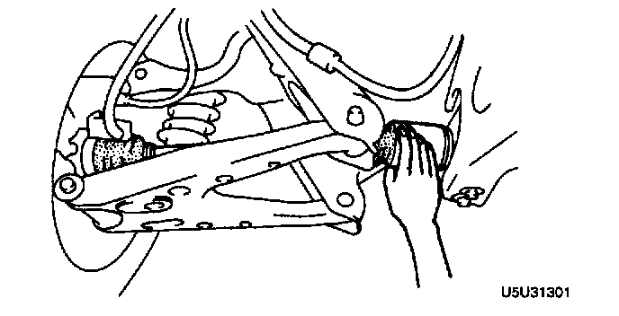

Axle Shaft: Testing and Inspection
DRIVE SHAFT PREINSPECTION1. Inspect the dust boot on the drive shaft for cracks, damage, leaking grease, and a loose boot band.
2. Inspect the drive shaft for bending, cracks, and wear of the joints and splines.

3. Repair or replace the drive shaft as necessary.